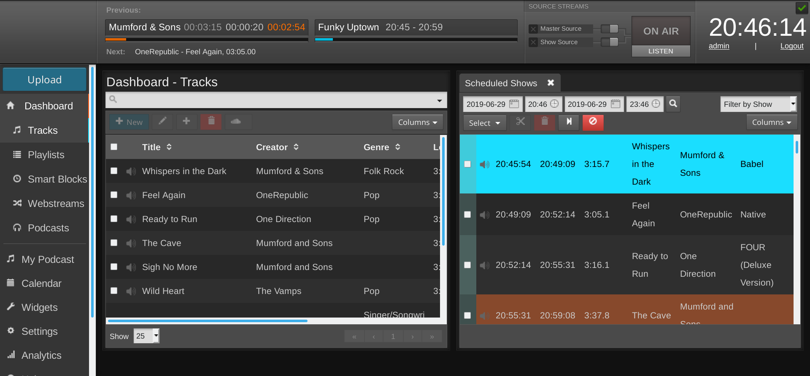
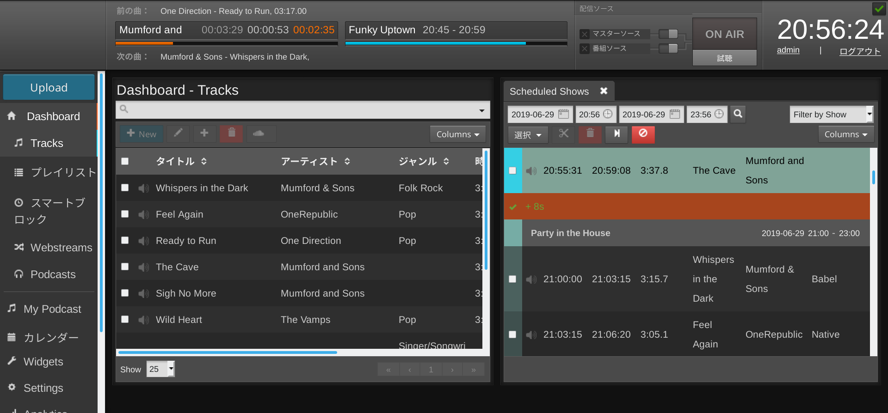
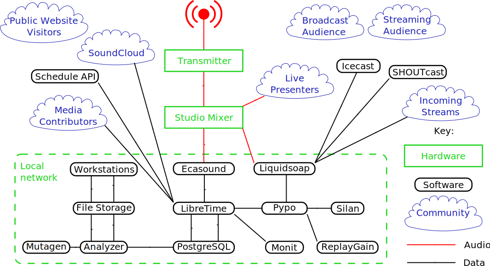
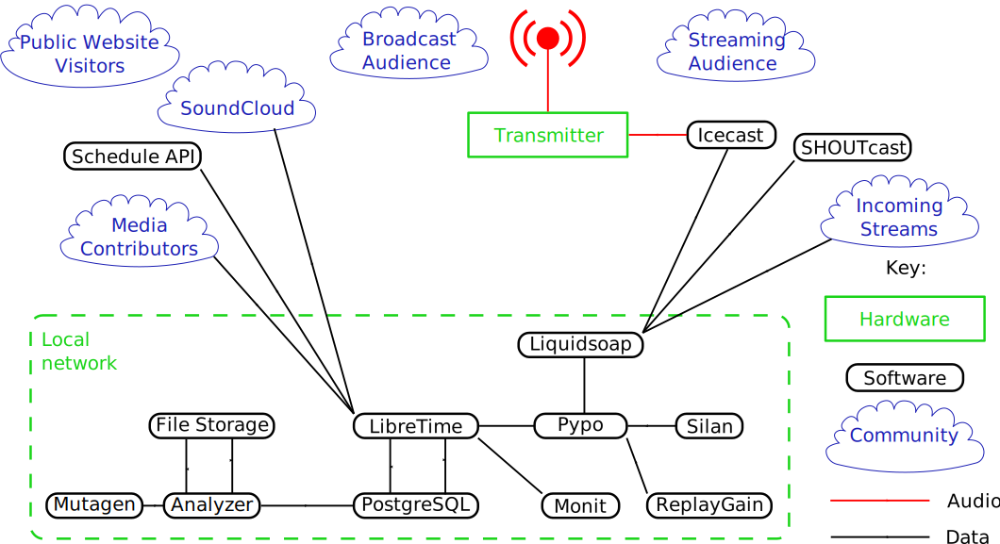

What is LibreTime?
LibreTime is the open broadcast software for scheduling and remote station management. Web browser access to the station's media library, multi-file upload and automatic metadata import features are coupled with a collaborative on-line scheduling calendar and playlist management. The scheduling calendar is managed through an easy-to-use interface and triggers playout with sub-second precision.

LibreTime has been intended to provide a solution for a wide range of broadcast projects, from community to public and commercial stations. The scalability of LibreTime allows implementation in a number of scenarios, ranging from an unmanned broadcast unit accessed remotely through the Internet, to a local network of machines accessing a central LibreTime storage system. LibreTime supports the playout of lossy compressed audio files in both MP3 and AAC formats and the open, royalty-free equivalent Ogg Vorbis. It also supports playout of lossless FLAC and WAV format audio files.
LibreTime manages the Liquidsoap stream generator at the heart of the system. Liquidsoap generates streams from files in the LibreTime library and any remote input streams that you specify. Available stream output formats include Ogg Vorbis, Ogg Opus, MP3, and AAC. The library is indexed in a PostgreSQL database to enable searching. Live shows can be recorded automatically with Ecasound, using the sound card line input. News editors, DJs and station controllers can use LibreTime to build playlists or smart blocks and manage media files (upload, edit metadata, manage advertisements) at the station or via the Internet.
The LibreTime administration interface is designed to work with any web browser, on any desktop or mobile platform with a minimum display size of 1280x768 pixels. LibreTime looks its best on a high definition display of 1920x1080 pixels. The recommended web browsers are Mozilla Firefox 25 or Google Chrome 30 (or later versions). Apple Safari 6 (or later) is also supported.
International UTF-8 metadata in media files is supported throughout, and the LibreTime interface can be localized into any language or dialect using the standard GNU gettext utility. Localizations that are installed by default include Austrian, Brazilian, British, Canadian, Chinese, Czech, French, German, Greek, Hungarian, Italian, Korean, Polish, Russian, Spanish and USA. See the chapter Interface localization for details of how to update a translation or add a new localization.

The scheduler in LibreTime has a calendar view, organized by months, weeks and days. Here the program editors can schedule playlists and shows for their broadcast station. In some scenarios, the transmitter is situated outside the reach of the broadcaster and all program management has to be maintained through the web interface. Possible reasons for this scenario might be of a pragmatic nature (running many stations from one central office due to limited human resources) or an emergency (running a transmitter in a crisis area without putting staff at risk).
LibreTime workflow
This typical workflow is intended to clarify the difference between the various components that make up a complete LibreTime system.
-
There are media files on a storage server, which include metadata in their tags (title, creator, genre and so on). This storage server might be accessed directly via studio workstations on the local network.
-
The LibreTime media-monitor keeps track of files being added, renamed, moved or removed from storage, and reads their metadata using the Mutagen library.
-
A PostgreSQL database contains the location of those media files and their metadata. This means you can search for and playlist a set of media files according to the specific metadata that you require, or use a 'smart block' to select the files for you. The database also contains details of specified remote input streams.
-
Pypo, the Python Playout engine, downloads media from the storage up to 24 hours ahead of playout and checks it for average level (with ReplayGain tools) and leading or trailing silence (with Silan). At playout time, the media to be broadcast is sent to Liquidsoap.
-
Liquidsoap takes individual media files and remote input streams, and assembles them into a continuous output stream. This stream can be sent to a sound card (e.g. for a broadcast mixer, on the way to an FM or DAB transmitter) or to a streaming server for IP network distribution, over the LAN, local WiFi or the Internet. You can stream to a sound card and up to three different stream distribution servers with the same LibreTime server, if you wish.
-
Icecast (http://www.icecast.org/) is the default stream distribution server, and there is also support for SHOUTcast (http://www.shoutcast.com), but in theory you could stream from Liquidsoap to any online service. If a suitable Liquidsoap output is not available for your streaming service of choice, you can send audio from Liquidsoap to a separate encoding or streaming machine via a sound card or relay stream.
-
Monit monitors the health of pypo, media-monitor and Liquidsoap, and reports the status of these services to LibreTime.
-
RabbitMQ pushes messages from LibreTime to media-monitor and pypo about changes to media files and the playout schedule.
-
LibreTime manages all of these components, and provides an easy, multi-user web interface to the system. It enables your station staff, depending on the permissions you have granted them, to:
a) upload media files to the storage server via the Add Media page
b) automatically import file metadata into the PostgreSQL database
c) search for and download media files, and edit the metadata of individual files, if required, on the Library page
d) create and edit playlists of media files or create smart blocks of content based on metadata, edit cue points and fades, and audition them. Playlists and smart blocks are also saved in the database, and can be searched for
e) schedule colour-coded broadcast shows (which can contain playlists, smart blocks, pre-recorded complete shows, timed remote input streams, or be live) for specific dates and times on the Calendar page. Regular shows can be scheduled by the day of the week or month, and can be linked to share content
f) automatically record live shows at specific times and dates (in 256 kbps Ogg Vorbis format by default) from the sound card input with Ecasound, upload them to the storage server and import them into the database
g) manage presenter, staff and guest access to LibreTime, and contact details, via the Manage Users page
h) see what is about to be played by Liquidsoap on the Now Playing page, with support for last-minute changes to the content
i) upload media files from LibreTime to a third-party hosting service, such as SoundCloud
j) audition available output streams from the server using the Listen button
k) check the status and resource usage of system components on the Status page
l) export the broadcast schedule to external sites via the Schedule API
m) see logs on the Playout History page and view graphs on the Listener Stats page
n) configure the LibreTime system on the Preferences, Media Folders and Streams pages.
Example studio broadcast system
In the diagram of an FM radio station below, LibreTime is hosted on a server connected to the local network, with direct soundcard access. Liquidsoap outputs streams to both the transmitter, via the main studio mixer, and streaming media servers. The machine running LibreTime is behind a firewall because it is also connected to the Internet for remote access by media contributors. This enables LibreTime to offer password-protected access to the media library and scheduling from both inside and outside the studio building.

Example web broadcast system
In the diagram below, LibreTime is hosted on a remote web server, and has no soundcard. There does not need to be a centralised studio, although LibreTime can enable remote studios to stream in to Liquidsoap at authorised times. Optionally, the outgoing Icecast stream can be relayed to a transmitter.
